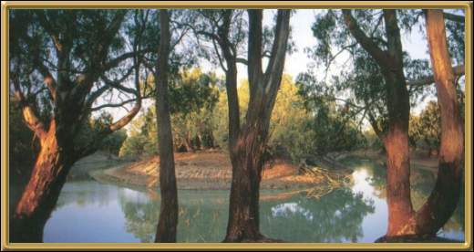

Photographer: Unknown
Kinchega National Park is located 110 km (approx. 68 miles) south-east of Broken Hill. The saucer shaped overflow lakes from the Darling River that are found here, provide a vital habitat for many native water birds, including our very beautiful black swans. There are plenty of walking tracks and scenic drives through the park.